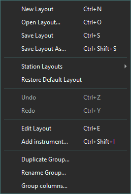
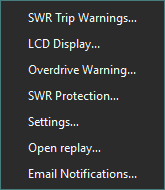
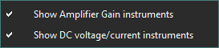
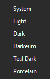
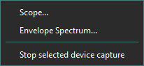
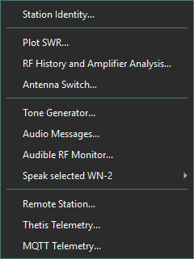
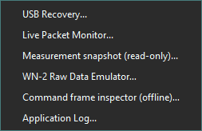
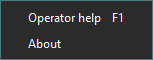

Main window, menus and shortcuts
On this page
- Main window at a glance
- Layout menu
- Device menu
- View menu
- Theme menu
- Capture menu
- Tools menu
- Diagnostics menu
- Help menu
Main window at a glance
The menu bar runs across the top. The device toolbar underneath selects which WN-2 the Connect and Disconnect buttons operate on. Your layout fills the main area. The bottom status line reports connection conditions. The title bar shows your layout name and, when entered, your callsign and location. An asterisk next to the layout name means there are unsaved changes.

Menus, device toolbar, dashboard and connection status in the main window. Select image to enlarge.
Pause the pointer over a menu command for an explanation. Toggle Device → Settings → Application → Enable tooltips to show or hide these explanations throughout the app. Existing keyboard shortcuts continue to work.
Layout menu
Use this menu to create, open and save dashboards.
- New Layout starts an empty arrangement. Open Layout loads one you saved.
- Save Layout / Save Layout As saves changes or creates a separately named copy.
- Restore Default Layout returns to the default arrangement after checking for unsaved changes.
- Station Layouts provides Single Radio — HF/VHF and Radio and Amplifier — HF/VHF starting points.
- Bind instruments to device assigns an entire layout or one section to a local or remote WN-2 while preserving channels and appearance. Binding instructions.
- Undo / Redo reverses or restores layout edits.
- Edit Layout shows movement and resizing handles. Add instrument opens the instrument chooser.
- Duplicate Group / Rename Group organizes sections. Group columns sets how many groups appear across the dashboard.

Layout menu. See the Layout walkthrough before rearranging an important saved display. Select image to enlarge.

Device menu
Settings is the first item and opens device and application preferences. LCD Display configures the hardware display range. Below the separator, SWR Protection, SWR Trip Warnings and Overdrive Warning group protection setup and active warnings. Email Notifications is in its own group.

Device menu. Settings is the starting point for coupler selection. Select image to enlarge.

View menu
Open or hide the Compact Station Panel, or show/hide Amplifier Gain and DC voltage/current instruments. Hiding them does not delete their settings. Turn the same option on to show them again.

Visibility controls let you simplify the display for the current activity. Select image to enlarge.

Theme menu
Select a color theme. This changes the appearance of the application, not your readings or layout positions. For larger or smaller controls, use Device → Settings → Application → App Scale Factor.

Theme choices are available directly from the main menu. Select image to enlarge.

Capture menu
Open Scope to inspect a captured waveform or Envelope Spectrum to examine its frequency content. Stop selected device capture stops capture on the WN-2 selected in the main toolbar.

Scope and Envelope Spectrum are separate views of captured measurements. Select image to enlarge.

Tools menu
- Station Identity sets the callsign and location shown in the title bar.
- The next group contains Plot SWR, RF History and Amplifier Analysis and Antenna Switch.
- The audio group contains Tone Generator, Audio Messages, Audible RF Monitor and Speak selected WN-2.
- The final group contains remote-operation tools: Remote Station, Thetis Telemetry and MQTT Telemetry. Remote Station opens the Station Host and Remote Client for read-only remote monitoring.

Tools menu. Open only the tools needed for your operating activity. Select image to enlarge.

Diagnostics menu
The first group, USB Recovery, helps restore a troubled connection. Live Packet Monitor shows incoming and outgoing data. Measurement snapshot and Command frame inspector provide detailed information for troubleshooting. WN-2 Raw Data Emulator lets you practice without hardware. Application Log records application activity and errors. Separators distinguish recovery, packet/measurement/log inspection, and emulator/offline tools. You do not need these diagnostic tools for ordinary meter operation. Connection troubleshooting is a useful first stop.

Diagnostic tools are separate from normal station controls. Select image to enlarge.

Help menu
Operator help opens this guide. About shows application information, licensing and acknowledgments.

Use Help whenever you need an explanation without leaving the application. Select image to enlarge.

Help home · RF StateSide · RayWn2App operator guide